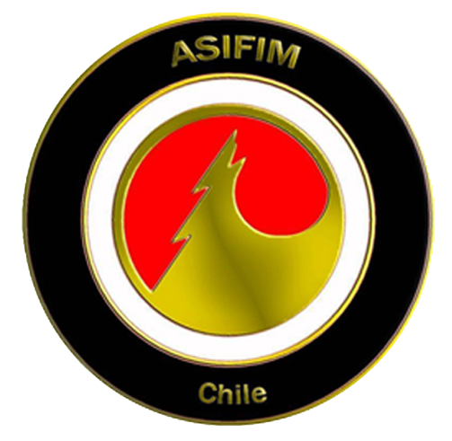

✕

Psíquico, Médium y Ocultista.
Artista Simbólico y Asesor Integral.
Creador de PSI-MAGIA y Director de ASIFIM Chile.
Mi trabajo nace del encuentro entre mundos que habitualmente se presentan por separado: el desarrollo psíquico, las artes internas, el ocultismo, el simbolismo, la creación y el pensamiento aplicado.
Después de tres décadas de formación, práctica y exploración, estas áreas convergen actualmente en cinco dimensiones que definen mi trabajo:
No las entiendo como actividades aisladas, sino como distintas expresiones de una misma búsqueda: comprender, crear y transformar la experiencia en conocimiento y el conocimiento en herramientas.
Mi recorrido comenzó durante la infancia con las artes marciales, el Tai Chi y el Qigong, incorporando progresivamente meditación, trabajo corporal y energético y diferentes disciplinas orientales.
Desde los 12 años comencé a explorar conscientemente el desarrollo de facultades psíquicas. Durante la adolescencia inicié además mi recorrido por la magia, el ocultismo, la parapsicología y los sistemas de adivinación, explorando posteriormente numerosas tradiciones, métodos y escuelas de Oriente y Occidente.
En 2006 inicié mi actividad profesional como terapeuta holístico y profesor de Tai Chi - Qigong, incorporando desde 2007 el masaje terapéutico y sensitivo.
Durante esta etapa desarrollé también trabajo energético, simbólico y mágico, además de participar en la formación de practicantes, masajistas e instructores de Tai Chi - Qigong vinculados a ASIFIM.
Una experiencia cercana a la muerte en 2017 marcó posteriormente una nueva etapa de mi recorrido, en la que la mediumnidad adquirió un lugar concreto dentro de mi experiencia y práctica psíquica.
Actualmente ya no ejerzo profesionalmente el masaje ni las terapias energéticas. Esa etapa forma parte de mi trayectoria y experiencia, mientras mi trabajo actual se concentra principalmente en PSI-MAGIA, desarrollo personal, arte y asesoría integral.
Mi práctica psíquica comenzó alrededor de los 12 años, mucho antes de convertirse en una actividad pública o profesional.
A lo largo de los años he trabajado con percepción extrasensorial, lectura de aura, Tarot y otros oráculos, estados modificados de conciencia y exploración de fenómenos PSI .
Mi recorrido por la magia comenzó durante la adolescencia y se desarrolló mediante el estudio comparado y la experimentación con diferentes escuelas, tradiciones y sistemas mágicos.
El Hermetismo y la Magia del Caos constituyen referentes importantes dentro de esa historia, pero actualmente no me defino como representante de ninguna de estas corrientes.
De esa búsqueda surge mi propio sistema: PSI-MAGIA.
Una propuesta construida desde la convergencia entre psiquismo, magia, entrenamiento, simbolismo, voluntad y experiencia.
Mi identidad mágica actual es PSI-MAGUS.
También he desarrollado otros sistemas y líneas de investigación propias, entre ellos Cybermagic01 y el Camino Lilithiano, además de herramientas como el Oráculo de Said.
Mi trabajo no se ha desarrollado solamente desde el estudio y la práctica privada.
A lo largo de los años he realizado clases, talleres, demostraciones, sesiones, formación y charlas, abordando especialmente tres grandes áreas:
PSI-MAGIA y Desarrollo Psíquico
Tai Chi - Qigong
Sexualidad Esotérica
He participado en encuentros como Expo Brujos, Expo Mundo Místico y Feria Ocultura, además de formar parte del proceso de casting del programa Psíquicos: Están entre nosotros de Chilevisión.
También he participado en la formación de masajistas e instructores de Tai Chi y Qigong, desarrollando durante años una faceta docente dentro de ASIFIM.
Mi historia está profundamente vinculada a ASIFIM, escuela familiar fundada en 1984, donde comenzó buena parte de mi formación en artes internas y desarrollo integral.
Desde 2019 soy Director de ASIFIM Chile, continuando el legado iniciado por mi familia y desarrollando una nueva etapa en la que esa experiencia dialoga con nuevas herramientas, metodologías y campos de conocimiento.
Actualmente ASIFIM se proyecta como un espacio de desarrollo integral y asesoría, articulando experiencia tradicional con creatividad, formación, pensamiento sistémico y nuevas tecnologías.
Said es también mi identidad artística.
La música, la pintura, la ilustración, la escritura y la creación simbólica no constituyen un elemento separado de mi trabajo: son otra forma de investigar, interpretar y expresar la experiencia.
Mi trabajo artístico cruza experiencia personal, simbolismo, imaginación, ocultismo y exploración de la conciencia.
Mi trayectoria también se ha desarrollado fuera del ámbito esotérico.
Soy Técnico Superior en Administración, titulado en 2019, con formación complementaria en marketing, creatividad, gamificación, programación, herramientas digitales y pensamiento sistémico.
Especialmente después de la pandemia, esta dimensión comenzó a transformarse en una nueva línea profesional: la Asesoría Integral.
Trabajo con personas, emprendedores, proyectos y organizaciones integrando herramientas provenientes de la administración, creatividad, análisis de sistemas, comunicación y desarrollo humano.
El objetivo no es aplicar una receta idéntica a todos, sino comprender el sistema, detectar sus problemas y construir soluciones apropiadas para cada contexto.
Mi formación comprende tres décadas vinculadas al cultivo energético y aproximadamente 25 años de desarrollo psíquico, junto con más de dos décadas de estudio, práctica y exploración de las artes mágicas y el ocultismo.
También cuento con formación en Gamificación, Analítica Web y Marketing Digital, Design Thinking, Programación Neurolingüística (PNL) y estudios continuos en teoría de sistemas, creatividad y simbolismo.
El conocimiento también puede convertirse en juegos, metodologías, mundos simbólicos, herramientas educativas y experiencias transformativas.
Una parte fundamental de mi trabajo consiste precisamente en conectar áreas aparentemente diferentes, identificar sus estructuras y convertirlas en métodos, sistemas, obras y experiencias.